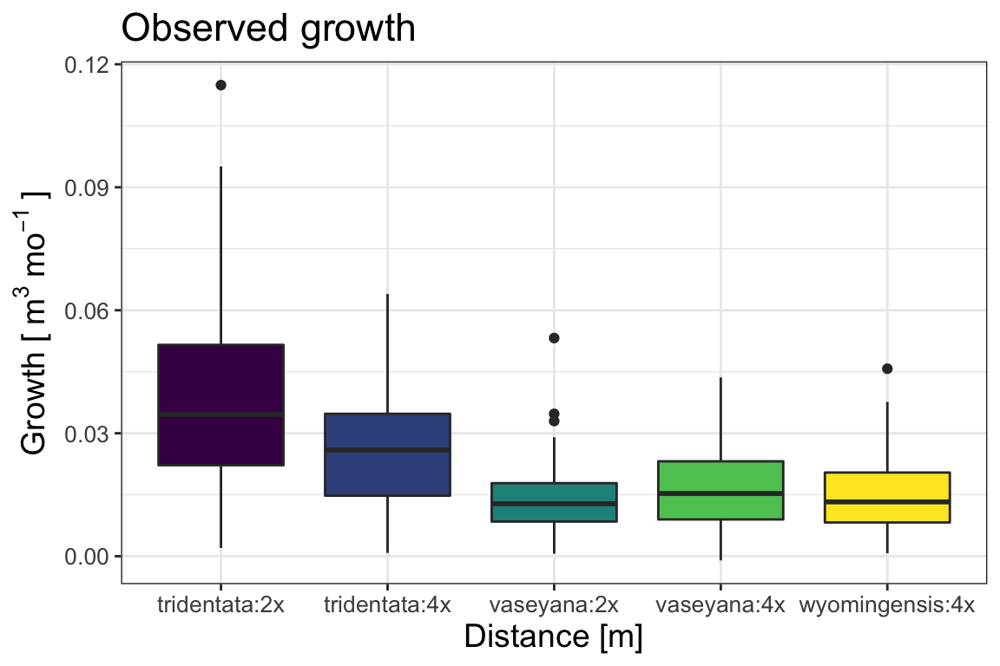
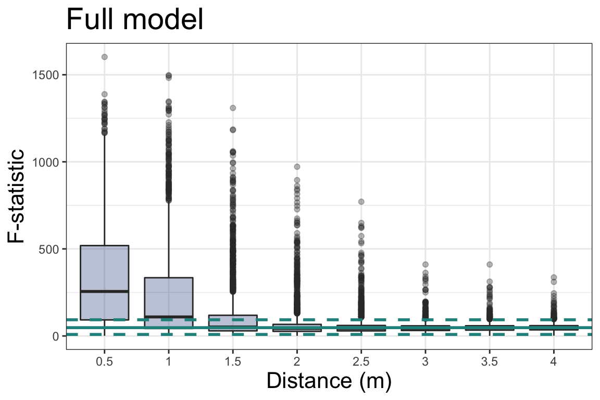

In an era of increasing anthropogenic disturbances, there is a pressing need to forecast how ecological variation affects restoration outcomes. Plant-plant interactions, including negative density-dependence (NDD), are an important source of variation that could alter plant performance depending on the spatial characteristics of plant neighborhoods. A local neighborhood can be defined in terms of the number, identity, and spatial proximity of neighbors to the focal plant.
We explored the effect of NDD on plant performance in a series of spatially explicit simulations parametrized on a long-term sagebrush (Artemisia tridentata) common garden experiment. The simulation workflow included three steps. First, we fit a spatial Bayesian model to estimate plant growth and the magnitude of spatial interactions using field-data from a common garden experiment located in Idaho, USA. This common garden contained a set of big sagebrush plants representative of high intraspecific variation, including three subspecies and two ploidy variations (subspecies:ploidy). Second, we simulated plant growth under incrementally increasing interspaces between neighbors. Finally, we quantified the magnitude of among subspecies:ploidy group differences in simulations with and without consideration of spatially-explicit plant locations. We applied linear analysis of variance to examine group (subspecies:ploidy) differences in prediction outputs to parallel frequently-used analyses of common garden data. The statistical and prediction models were identical and of the following form.
Negative density-dependence (NDD) term: \[ \Phi_{i,s} = \sum_{i = 1, i \ne j}^{n-1} \beta_{1[s]} Size_{j,s} * e^{-Distance_{j}^2\beta_2} \] Full model: \[ \hat{\mu_{i,s}} = \alpha_{0[s]} + \alpha_{1[s]}Size_i + \alpha_{3[s]}\Phi_{i,s} \] Base model: \[ \hat{\mu_{i,s}} = \alpha_{0[s]} + \alpha_{1[s]}Size_i \]
The data included 448 plants in a grid arrangement with spacings between neighboring plants of 1 and 1.5 meters. The observed growth varied by spacies with A. t. tridentata:2x having greatest growth rate compared to other subspecies:ploidy groups. The statistical model fit had an \(r^2 = 0.5\) and mean absolute error of 0.0097 \([m^2month^{-1}]\).
Figure 1: Relative size and location of sagebrush plants in a common garden experiment. Different colors indicate subspecies and cytotypes, while the relative size of circles indicates crown volume.
 Figure 2: A box plot showing the observed growth of big sagebrush plants in Majors Flat common garden.
We found that smaller interspaces lead to greater differences among groups due to density-dependence processes. Starting from a minimum distance of 0.5 m, the F-statistic diminished and eventually converged asymptotically to F-statistic values those of a base model (no NDD). The convergence point corresponded to a planting distance of ~3 meters. The correlation between average simulation outcomes from the full and base models ranged from -0.77 to 1 when the distance became greater. From interspaces greater than 3 m, the effect of density-dependence was not discernible.
 Figure 3: The magnitude of among group differences, F- statistic, as a function of distance between plants in a common garden. Black dashed line shows median value, while coloured lines correspond to posterior samples of paramet estimates model. Vertical lines indicate the actual spacing in the common garden. Yellow horizontal line shows the F-statistic values based on the observed data.
Figure 4: Spearman correlation coefficient between predicted mean growth of a full (NDD) and base (no NDD) models. Black dashed line indicates median correlation, while coloured lines correspond to the uncertainty in model parameters.
Overall, we demonstrate the utility of spatially-explicit models to guide planting designs for big sagebrush that account for plant-plant interactions. Model simulations showed that NDD can alter ecological inference when spatial interactions are not accounted for. Our study emphasizes the need to account for biotic sources of variation when quantifying demographic outcomes of both plant growth in experimental designs and restoration field trials.
Boise State University, andriizaiats@u.boisestate.edu↩︎
US Geological Survey, Forest and Rangeland Ecosystem Science Center, mgermino@usgs.gov↩︎
Boise State Unviersity, juanmir@ual.es↩︎
Boise State Unviersity, trevorcaughlin@boisestate.edu↩︎